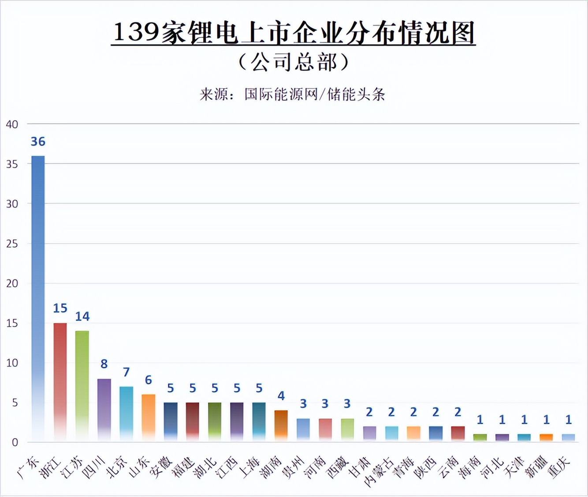

设为首页
|
加入收藏
首页
新能源发展路
可视化
关于新能源
登录/注册
资源共享
发展
New energy development path
我国新能源汽车产业发展历程
研发布局>>产业化准备>>示范推广>>产业化发展
二十世纪九十年代，我国意识到新能源汽车在缓解能源危机和环境治理方面的突出贡献和作用，逐步启动对于新能源汽车研发的鼓励政策。经历了“十五”期间研发布局、“十一五”期间的产业化准备、“十二五”期间示范推广，我国新能源汽车产业度过了技术和产业链飞速发展的形成期。2016年至今，我国新能源汽车产业初具规模，步入成长期。从产业生命周期理论的角度看，产能扩张、技术创新、产品升级、管理能力提升成为我国新能源汽车产业成长期阶段的标签，也表明我国新能源汽车行业正由高速发展向高质量发展转变。
政策发展阶段
我国新能源汽车产业政策演变过程大致分为三个时期：
萌芽期（2001～2008年）：这一时期中新能源汽车等相关概念被提出，聚焦新能源汽车的生产过程并制定行业标准。然而，这一阶段国家还没颁布扶持新能源汽车发展的具体财税政策。代表政策为《关于调整汽车产业结构的通知》。该政策制定了新能源汽车未来的发展规划。 推广期（2009～2014年）：这一时期政府出台了相关的对新能源汽车的补贴政策，同时开启新能源汽车示范运行项目，新能源汽车被正式推出。在这一阶段，示范推广的试点在进一步的推广和加深，扶持新能源汽车产业的政策不断出台，逐渐形成了一个完整的产业政策体系。代表政策为《关于开展节能与新能源车示范推广试点等通知》。 高速发展期（2015年至今）：这一时期的产业政策与推广期类似，涉及推广试点、政策补贴等主要方面得以完善，但不同的是，这一阶段政策扩充到了基础设施建设等方面，因此对动力电池要求更高。自2015年起，新能源汽车产业的补贴标准在不断调整，呈现出技术门槛不断提高，补贴的额度不断退坡的变化趋势。代表政策为四部门联合发布的《关于2016～2020年新能源汽车推广应用财政支持政策的通知》。该政策的发布标志着新能源汽车产业政策进入了新的阶段，新能源汽车的推广应用补贴政策在2016～2020年继续实施，补贴逐年退坡。
发展现状
三个重点
一是近几年新能源汽车销量呈现爆发式增长。
二是头部厂商市场占有率集中度高。
三是充换电基础设施增长迅速。
发展趋势

六个方向
一是新能源汽车产业发展的市场化驱动力将进一步加强。二是新能源汽车的渗透率将进一步提升。三是纯电动汽车是我国新能源汽车的发展主力。
四是中小城市与乡村地区未来可能会成为新的市场空间。五是新能源汽车厂商的竞争可能会加剧。六是充换电基础设施的进一步发展。